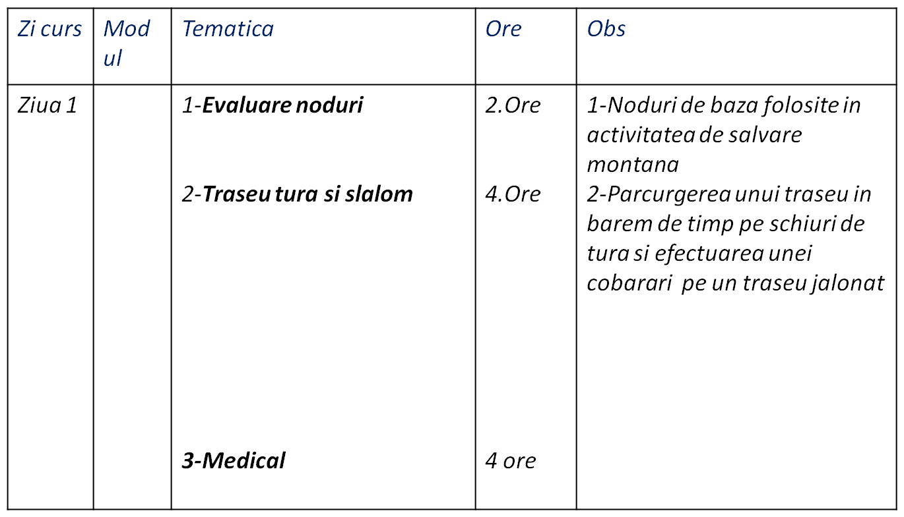
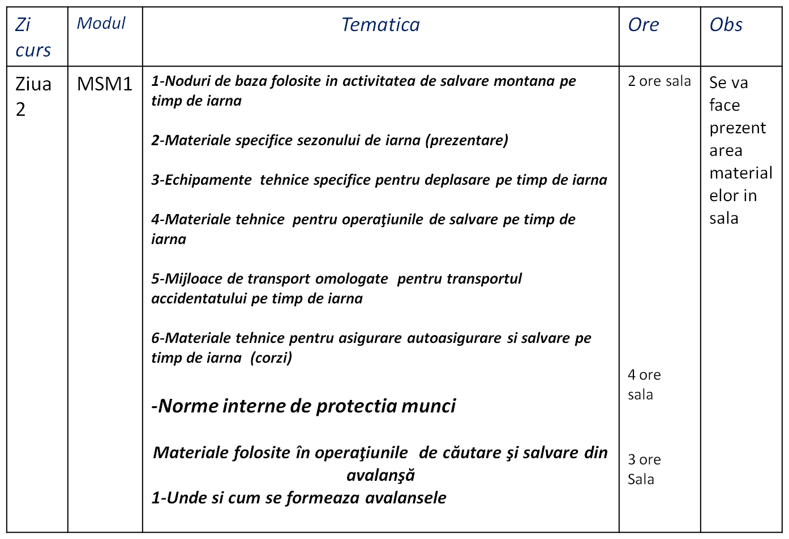
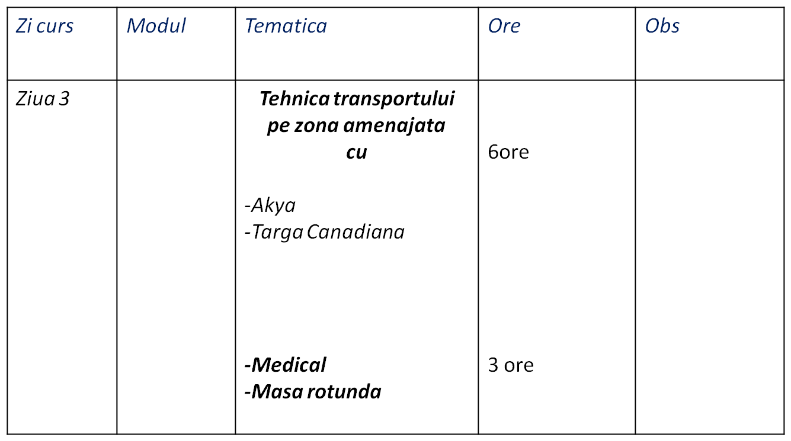
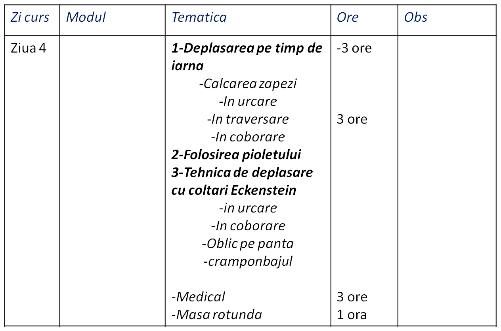
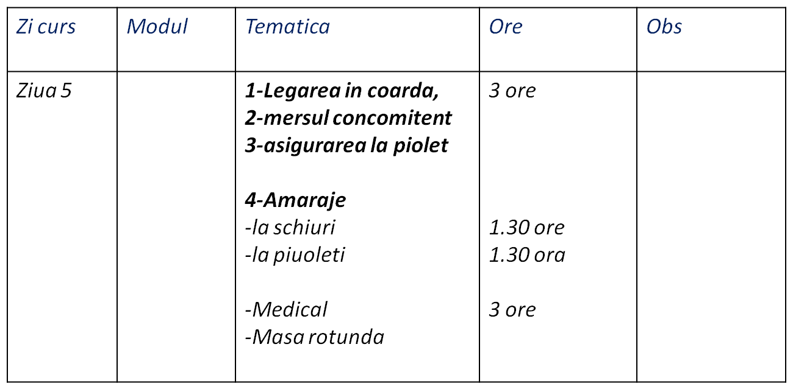
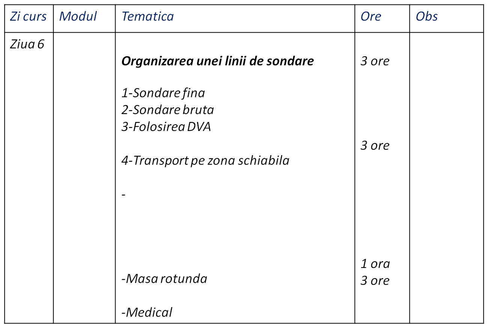
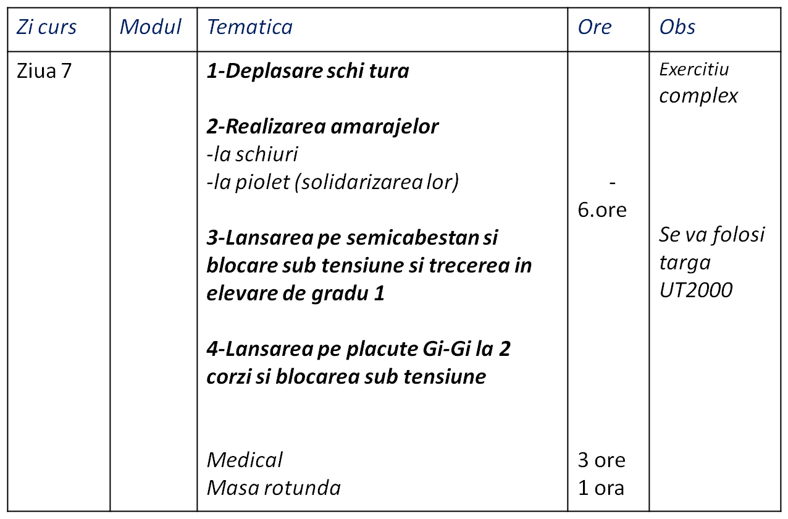
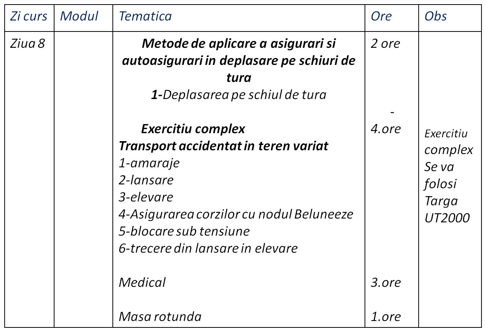
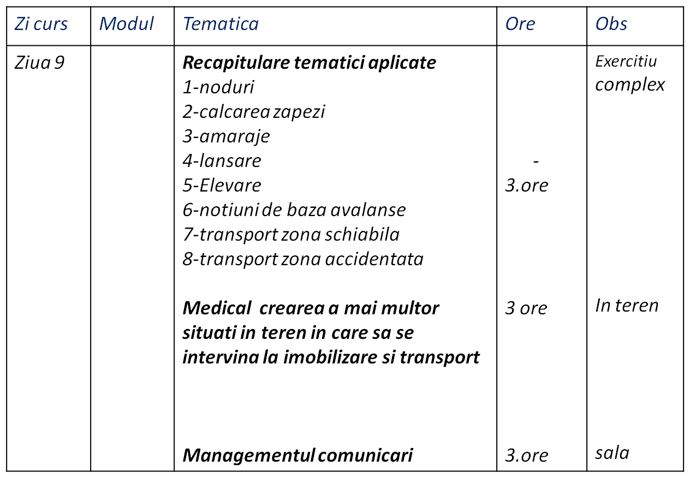
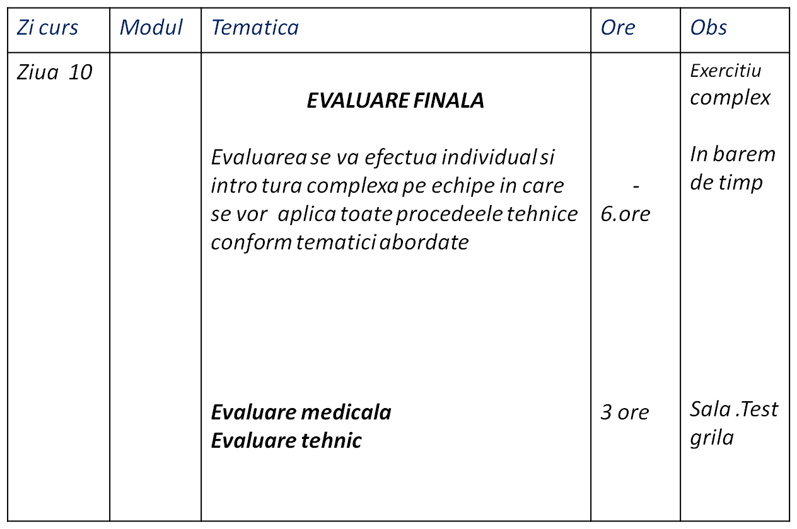

ASOCIATIA NATIONALA A SALVATORILOR MONTANI DIN ROMANIA
PROCEDURI ȘI TEHNICI DE BAZĂ ÎN SALVAREA MONTANĂ
SCOALA IARNA SALVAMONT INCEPATORI
CICLU 1 IARNA
FORMARE SALVATOR MONTAN
Evaluare intrare in Scoala Nationala Salvamont
etapa 1 iarna
Materiale si noduri specifice sezonului de iarna (prezentare ) si norme interne de protectia munci

Procedura de transport cu akya pe zona schiabila

Transportul pe zona schiabila si organizarea unei lini de sondare

Deplasarea pe timp de iarna (legarea in coarda si mersul concomitent)

Asiguraea
Si autoasigurarea pe timp de iarna

Lansarea si blocarea sub tensiune

Metode de aplicare a asigurari si autoasigurari in deplasare pe schiuri de tura

Recapitulare tematici aplicate

EVALUARE FINALA
